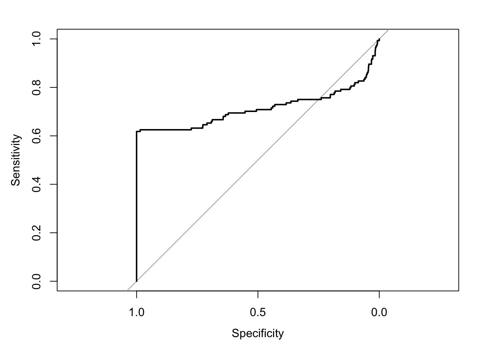
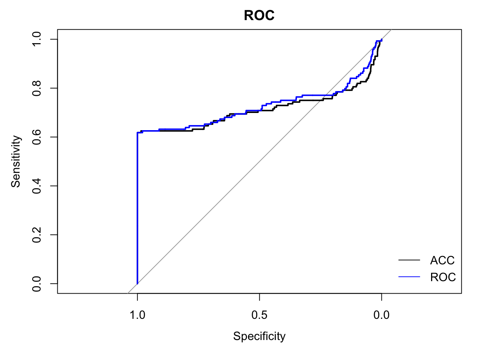
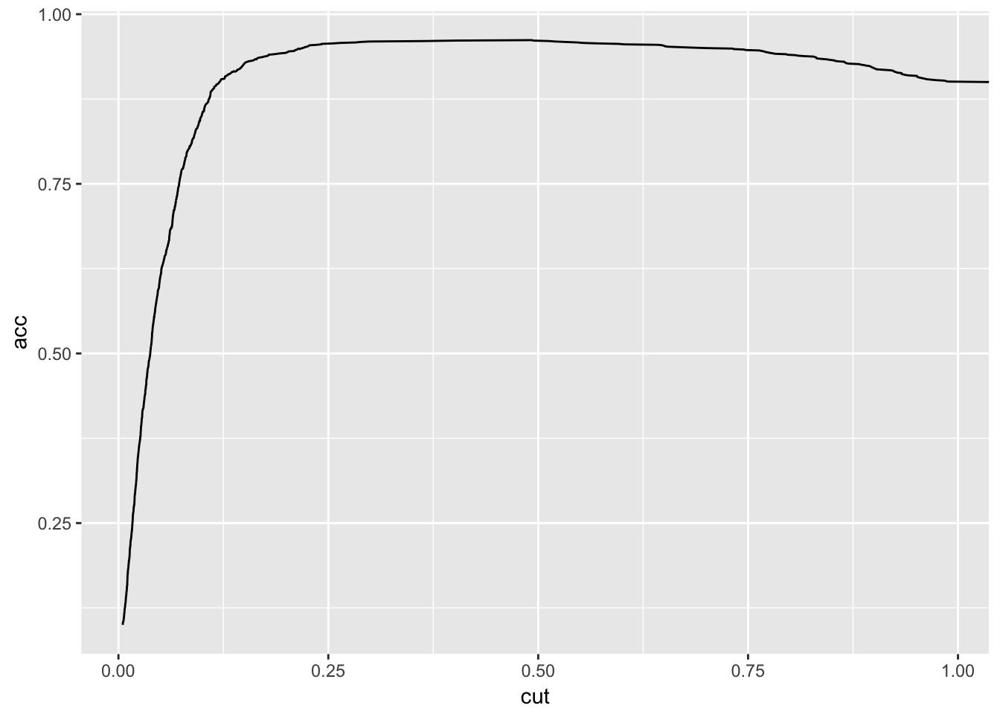
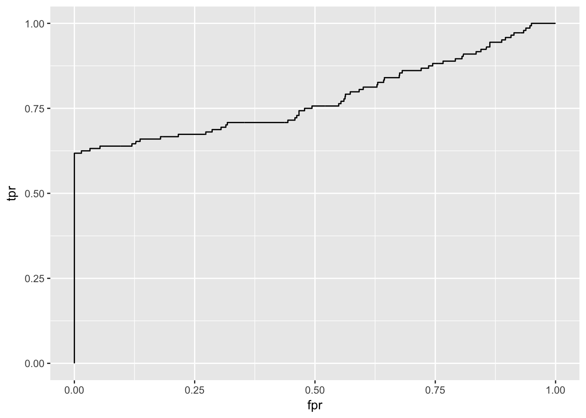

4 Classification
Last week we focused on using machine learning to predict a continuous outcome. This week we’ll concentrate on predicting, or classifying, a dichotomous variable. We’ll compare two different classification algorithms: * Support vector machine (SVM) classifier * LASSO logistic regression
4.1 Example using SVM classification in caret
Today we’ll use a dataset from Kaggle with lots information about US permanent visas applications. The goal is to predict the outcome of the application from a bunch of variables.
4.1.0.1 Getting set up
First, let’s load some packages.
# load up our packages
installif <- function(packages){
# give me a character vector of packages
for(p in packages){
# and I will check if we have them
if(!require(p, character.only = TRUE)){
# install them if we don't
install.packages(p)
}
# and load them if all goes well.
require(p, character.only = TRUE)
}
}
package_list <- c("tidyverse", "caret", "ROCR", "pROC", "knitr", "glmnet", "e1071")
installif(package_list)## Loading required package: tidyverse## Warning: package 'tidyverse' was built under R version 3.4.2## ── Attaching packages ────────────────────────────────── tidyverse 1.2.1 ──## ✔ ggplot2 2.2.1 ✔ purrr 0.2.4
## ✔ tibble 1.4.2 ✔ dplyr 0.7.4
## ✔ tidyr 0.7.2 ✔ stringr 1.2.0
## ✔ readr 1.1.1 ✔ forcats 0.2.0## Warning: package 'tibble' was built under R version 3.4.3## Warning: package 'tidyr' was built under R version 3.4.2## Warning: package 'purrr' was built under R version 3.4.2## Warning: package 'dplyr' was built under R version 3.4.2## ── Conflicts ───────────────────────────────────── tidyverse_conflicts() ──
## ✖ dplyr::filter() masks stats::filter()
## ✖ dplyr::lag() masks stats::lag()## Loading required package: caret## Warning: package 'caret' was built under R version 3.4.3## Loading required package: lattice##
## Attaching package: 'caret'## The following object is masked from 'package:purrr':
##
## lift## Loading required package: ROCR## Loading required package: gplots##
## Attaching package: 'gplots'## The following object is masked from 'package:stats':
##
## lowess## Loading required package: methods## Loading required package: pROC## Type 'citation("pROC")' for a citation.##
## Attaching package: 'pROC'## The following objects are masked from 'package:stats':
##
## cov, smooth, var## Loading required package: knitr## Loading required package: glmnet## Warning: package 'glmnet' was built under R version 3.4.2## Loading required package: Matrix##
## Attaching package: 'Matrix'## The following object is masked from 'package:tidyr':
##
## expand## Loading required package: foreach##
## Attaching package: 'foreach'## The following objects are masked from 'package:purrr':
##
## accumulate, when## Loaded glmnet 2.0-13##
## Attaching package: 'glmnet'## The following object is masked from 'package:pROC':
##
## auc## Loading required package: e1071Next, let’s load the data.
# clear the environment, just to be safe
rm(list=ls())
# load data
data = read.csv('files/us_perm_visas_10K.csv', stringsAsFactors = FALSE)Time to tidy the data.
# remove columns with no useful data (i.e. all observations are NA or has no text)
#data.reduced = data[,(colSums(is.na(data)) < nrow(data)) & (colSums(data == '') < nrow(data) | is.na(colSums(data == '')))]
# do we have to keep the broken original df? -jls
data <- data[,(colSums(is.na(data)) < nrow(data)) & (colSums(data == '') < nrow(data) | is.na(colSums(data == '')))]
# change text to upper case, select unique rows, recode dollar amounts, and move outcome variable to the first column
data = data %>%
as_tibble() %>%
mutate(pw_amount_9089 = gsub(",", "", pw_amount_9089)) %>%
extract(pw_amount_9089, "pw_amount_9089", regex = "([0-9]{1,}).00") %>%
mutate(pw_amount_9089 = as.integer(pw_amount_9089)) %>%
mutate_if(is.character, funs(toupper)) %>%
mutate_if(is.character, as.factor) %>%
unique(.) %>%
select(case_status, everything())
# sry am bad at pipe syntax -jls
data$case_received_date <- as.Date(data$case_received_date)
data$decision_date <- as.Date(data$decision_date)For simplicity, let’s limit ourselves to cases that are either certified or denied.
# check levels
levels(data$case_status)## [1] "CERTIFIED" "DENIED" "WITHDRAWN"# remove withdrawn cases and relevel
data.relevel = data %>%
filter(!case_status %in% "WITHDRAWN") %>%
mutate(case_status = as.factor(as.character(case_status)))
# double check that it worked
levels(data.relevel$case_status)## [1] "CERTIFIED" "DENIED"Let’s take a look at the predictor variables.
head(data.relevel)## # A tibble: 6 x 125
## case_status agent_city agent_firm_name agent_state case_number
## <fct> <fct> <fct> <fct> <fct>
## 1 CERTIFIED PHILADELPH… GREEN AND SPIEGEL LLC PA A-16222-40…
## 2 CERTIFIED NEW YORK LAW OFFICES OF BARRY SI… NY A-16140-11…
## 3 CERTIFIED ENOLA LAW OFFICES OF KENDRA S… PA A-16305-66…
## 4 CERTIFIED "" "" "" A-16305-66…
## 5 CERTIFIED "" "" "" A-16305-66…
## 6 CERTIFIED ROCKVILLE NIELSEN & DOODY, LLC MD A-16302-66…
## # ... with 120 more variables: case_received_date <date>,
## # class_of_admission <fct>, country_of_citizenship <fct>,
## # decision_date <date>, employer_address_1 <fct>,
## # employer_address_2 <fct>, employer_city <fct>, employer_country <fct>,
## # employer_decl_info_title <fct>, employer_name <fct>,
## # employer_num_employees <dbl>, employer_phone <fct>,
## # employer_phone_ext <int>, employer_postal_code <fct>,
## # employer_state <fct>, employer_yr_estab <int>,
## # foreign_worker_info_city <fct>, foreign_worker_info_education <fct>,
## # foreign_worker_info_inst <fct>, foreign_worker_info_major <fct>,
## # foreign_worker_info_state <fct>, fw_info_alt_edu_experience <fct>,
## # fw_info_birth_country <fct>, fw_info_education_other <fct>,
## # fw_info_postal_code <fct>, fw_info_rel_occup_exp <fct>,
## # fw_info_req_experience <fct>, fw_info_training_comp <fct>,
## # fw_info_yr_rel_edu_completed <int>, fw_ownership_interest <fct>,
## # ji_fw_live_on_premises <fct>, ji_live_in_dom_svc_contract <fct>,
## # ji_live_in_domestic_service <fct>, ji_offered_to_sec_j_fw <fct>,
## # job_info_alt_cmb_ed_oth_yrs <int>, job_info_alt_combo_ed <fct>,
## # job_info_alt_combo_ed_exp <fct>, job_info_alt_combo_ed_other <fct>,
## # job_info_alt_field <fct>, job_info_alt_field_name <fct>,
## # job_info_alt_occ <fct>, job_info_alt_occ_job_title <fct>,
## # job_info_alt_occ_num_months <int>, job_info_combo_occupation <fct>,
## # job_info_education <fct>, job_info_education_other <fct>,
## # job_info_experience <fct>, job_info_experience_num_months <int>,
## # job_info_foreign_ed <fct>, job_info_foreign_lang_req <fct>,
## # job_info_job_req_normal <fct>, job_info_job_title <fct>,
## # job_info_major <fct>, job_info_training <fct>,
## # job_info_training_field <fct>, job_info_training_num_months <int>,
## # job_info_work_city <fct>, job_info_work_postal_code <fct>,
## # job_info_work_state <fct>, naics_us_code <int>, naics_us_title <fct>,
## # orig_case_no <fct>, orig_file_date <fct>,
## # preparer_info_emp_completed <fct>, preparer_info_title <fct>,
## # pw_amount_9089 <int>, pw_determ_date <fct>, pw_expire_date <fct>,
## # pw_job_title_908 <fct>, pw_level_9089 <fct>, pw_soc_code <fct>,
## # pw_soc_title <fct>, pw_source_name_9089 <fct>,
## # pw_source_name_other_9089 <fct>, pw_track_num <fct>,
## # pw_unit_of_pay_9089 <fct>, recr_info_barg_rep_notified <fct>,
## # recr_info_coll_teach_comp_proc <fct>,
## # recr_info_coll_univ_teacher <fct>,
## # recr_info_employer_rec_payment <fct>, recr_info_first_ad_start <fct>,
## # recr_info_job_fair_from <fct>, recr_info_job_fair_to <fct>,
## # recr_info_on_campus_recr_from <fct>,
## # recr_info_on_campus_recr_to <fct>,
## # recr_info_prof_org_advert_from <fct>,
## # recr_info_prof_org_advert_to <fct>, recr_info_professional_occ <fct>,
## # recr_info_radio_tv_ad_from <fct>, recr_info_radio_tv_ad_to <fct>,
## # recr_info_second_ad_start <fct>, recr_info_sunday_newspaper <fct>,
## # recr_info_swa_job_order_end <fct>,
## # recr_info_swa_job_order_start <fct>, refile <fct>,
## # ri_1st_ad_newspaper_name <fct>, ri_2nd_ad_newspaper_name <fct>,
## # ri_2nd_ad_newspaper_or_journal <fct>, ri_campus_placement_from <fct>,
## # ri_campus_placement_to <fct>, …For the sake of time, we’re going to reduce the data in a couple of ways. There are more sophisticated ways to reduce the dimensionality while retaining the information from predictors (e.g. using PCA), but I’m just simply going to select the first 10 predictors. (Choosing some complete/potentially useful variables)
data.chop <- data.relevel[,c("case_status","case_received_date", "decision_date", "job_info_training",
"job_info_foreign_ed", "employer_num_employees", "job_info_foreign_lang_req",
"foreign_worker_info_education", "fw_info_rel_occup_exp",
"fw_info_req_experience", "job_info_experience")]
data.chop$case_received_date <- as.Date(data.chop$case_received_date)
data.chop$decision_date <- as.Date(data.chop$decision_date)
data.chop <- data.chop[complete.cases(data.chop),]Next, let’s reduce the number of observations we have while still making sure that we have enough observations in each outcome category.
Let’s check the base rate of each outcome.
round(table(data.chop$case_status)/nrow(data.chop),3)##
## CERTIFIED DENIED
## 0.979 0.021There are very few denials (lucky applicants!), but this will cause problems for us later. We’re going to oversample so that we have a 10% denial rate.
set.seed(6523)
n_denied <- nrow(data.chop[data.chop$case_status == "DENIED",])
# sample separtely within each level
cert = data.chop %>%
filter(case_status %in% "CERTIFIED") %>%
sample_n(n_denied*9)
den = data.chop %>%
filter(case_status %in% "DENIED")
#sample_n(192) # gonna use all the minority samples we can
# join samples
data.ml = bind_rows(cert,den)
# check proportions
round(table(data.ml$case_status)/nrow(data.ml),3)##
## CERTIFIED DENIED
## 0.9 0.14.1.0.2 Overview of steps
- Split the data into training and test samples
- Set training parameters (e.g. number of k-folds)
- Run model
- Inspect fit indices and accuracy
- Adjust model (if necessary)
- Apply model to test data to assess out of sample accuracy
4.1.0.3 Splitting the data
We want to both develop a model and assess how well it can predict application status in a separate sample, so we’ll split our data into training and test datasets. Let’s use 75% of the data in the training sample and the remaining 25% in the test sample.
To do this, we’ll use the createDataPartition() function in caret, which samples randomly within level of our outcome variable. This way we have the same proportion of outcomes in the training and test samples.
# set a seed so we all get the same dataframes
set.seed(6523)
# split the data based on the outcome case_status
in.train = createDataPartition(y = data.ml$case_status,
p = .75,
list = FALSE)
# check that it's actually 75%
nrow(in.train) / nrow(data.ml)## [1] 0.75# subset the training data
training = data.ml[in.train,]
# subset the test data (i.e. not in `in.train`)
test = data.ml[-in.train,]
# check proportions
round(table(training$case_status)/nrow(training),3)##
## CERTIFIED DENIED
## 0.9 0.1round(table(test$case_status)/nrow(test),3)##
## CERTIFIED DENIED
## 0.9 0.1Before we begin training the classifier, let’s setup our training parameters using trainControl(). For the sake of time, let’s use a 3-fold cross-validation. You may want to select more folds and/or repeat the k-fold cross-validation with several different samples. To do that you’d specify method = "repeatedcv" and repeats = [n repeats]. However, to save time, we’ll just do a single 3-fold cross-validation. We also want to output the classification probabilities so that we can use the “ROC” metric below and save the predictions.
train.control = trainControl(method = "cv",
number = 3,
classProbs = TRUE,
savePredictions = TRUE)4.1.0.4 Train the model
Now, we’ll train a support vector machine (i.e. method = "svmLinear") to predict our outcome case_status from all variables in the training dataset (i.e. case_status ~ .) using the training parameters we specified above (i.e. train.control). The rest of the inputs are as follows: * na.action = na.pass allows NAs to pass through the model without crashing * preProcess = c("center", "scale") centers and scales the predictors so that they’re on the same scale * metric = "Accuracy" means that we’ll use accuracy to select the optimal model
fit.svc <- train(case_status ~ .,
data = training,
method = "svmLinear",
trControl = train.control,
na.action = na.pass,
preProcess = c("center", "scale"),
metric = "Accuracy")
# fit.svc = readRDS("files/fit.svc") # if you try to run the model and it's taking too long, you can load the data with this command
# saveRDS(fit.svc, "files/fit.svc") # code to save the model4.1.0.5 Assess the model
First, let’s check the mean accuracy of the model across cross-validation folds.
fit.svc## Support Vector Machines with Linear Kernel
##
## 1440 samples
## 10 predictor
## 2 classes: 'CERTIFIED', 'DENIED'
##
## Pre-processing: centered (21), scaled (21)
## Resampling: Cross-Validated (3 fold)
## Summary of sample sizes: 960, 960, 960
## Resampling results:
##
## Accuracy Kappa
## 0.9618056 0.744382
##
## Tuning parameter 'C' was held constant at a value of 1Let’s check out the classification accuracy and kappa values on each fold.
fit.svc$resample## Accuracy Kappa Resample
## 1 0.9625000 0.7500000 Fold1
## 2 0.9604167 0.7331461 Fold2
## 3 0.9625000 0.7500000 Fold3Let’s unpack this a little further and look at our false positive and false negative rates using the confusion matrix.
confusionMatrix(fit.svc)## Cross-Validated (3 fold) Confusion Matrix
##
## (entries are percentual average cell counts across resamples)
##
## Reference
## Prediction CERTIFIED DENIED
## CERTIFIED 90.0 3.8
## DENIED 0.0 6.2
##
## Accuracy (average) : 0.9618We can also visualize this by looking at the receiver operator curve.
plot(roc(predictor = fit.svc$pred$CERTIFIED, response = fit.svc$pred$obs))
4.1.0.6 Optimize the model
To try to improve our accuracy, we can adjust various parameters.
First, let’s change the selection metric from accuracy to ROC to try to balance sensitivity and specificity.
fit.svc.roc <- train(case_status ~ .,
data = training,
method = "svmLinear",
trControl = train.control,
na.action = na.pass,
preProcess = c("center", "scale"),
metric = "Kappa") # says ROC is not an available metric
# fit.svc.roc = readRDS("files/fit.svc.roc") # if you try to run the model and it's taking too long, you can load the data with this command
# saveRDS(fit.svc.roc, "files/fit.svc.roc") # code to save the modelLet’s compare accuracy and kappa values
fit.table = bind_rows(fit.svc$results, fit.svc.roc$results)
row.names(fit.table) = c("Accuracy", "ROC")
kable(fit.table, format = "pandoc", digits = 3)| C | Accuracy | Kappa | AccuracySD | KappaSD | |
|---|---|---|---|---|---|
| Accuracy | 1 | 0.962 | 0.744 | 0.001 | 0.010 |
| ROC | 1 | 0.962 | 0.744 | 0.004 | 0.035 |
Now let’s plot the ROC for both models
roc1=roc(predictor = fit.svc$pred$CERTIFIED, response = fit.svc$pred$obs)
roc2=roc(predictor = fit.svc.roc$pred$CERTIFIED, response = fit.svc.roc$pred$obs)
plot(roc1, col = 1, lty = 1, main = "ROC")
plot(roc2, col = 4, lty = 1, add = TRUE)
legend("bottomright", legend = c("ACC", "ROC"), col = c(1,4), lty = c(1,1), bty = "n")
Using the first model we ran, let’s tune the cost function (C).
# This doesn't work for me, turning warnings off off -jls
# specify different values to assign to the cost function
grid = expand.grid(C = c(0, 0.01, 0.05, 0.25, 0.75, 1, 1.5, 2,5))
fit.svc.tune = train(case_status ~ .,
data = training,
method = "svmLinear",
trControl = train.control,
na.action = na.pass,
preProcess = c("center", "scale"),
metric = "Accuracy",
tuneGrid = grid,
tuneLength = 10)
# fit.svc.tune = readRDS("files/fit.svc.tune") # if you try to run the model and it's taking too long, you can load the data with this command
# saveRDS(fit.svc.tune, "files/fit.svc.tune") # code to save the modelLet’s check the model results
fit.svc.tune## Support Vector Machines with Linear Kernel
##
## 1440 samples
## 10 predictor
## 2 classes: 'CERTIFIED', 'DENIED'
##
## Pre-processing: centered (21), scaled (21)
## Resampling: Cross-Validated (3 fold)
## Summary of sample sizes: 960, 960, 960
## Resampling results across tuning parameters:
##
## C Accuracy Kappa
## 0.00 NaN NaN
## 0.01 0.9618056 0.7438880
## 0.05 0.9618056 0.7438880
## 0.25 0.9618056 0.7438880
## 0.75 0.9618056 0.7438880
## 1.00 0.9618056 0.7438880
## 1.50 0.9618056 0.7438880
## 2.00 0.9618056 0.7438880
## 5.00 0.9604167 0.7330184
##
## Accuracy was used to select the optimal model using the largest value.
## The final value used for the model was C = 0.01.And plot the accuracy as a function of the cost parameter C
plot(fit.svc.tune)
Now let’s plot the ROC for all three models
roc1=roc(predictor = fit.svc$pred$CERTIFIED, response = fit.svc$pred$obs)
roc2=roc(predictor = fit.svc.roc$pred$CERTIFIED, response = fit.svc.roc$pred$obs)
roc3=roc(predictor = fit.svc.tune$pred$CERTIFIED, response = fit.svc.tune$pred$obs)
plot(roc1, col = 1, lty = 1, main = "ROC")
plot(roc2, col = 4, lty = 1, add = TRUE)
plot(roc2, col = 2, lty = 2, add = TRUE)
legend("bottomright", legend = c("ACC", "ROC", "TUNED"), col = c(1,4,2), lty = c(1,1,2), bty = "n")
And compare accuracy
fit.table = bind_rows(fit.svc$results, fit.svc.roc$results, filter(fit.svc.tune$results, C == .05))
row.names(fit.table) = c("Accuracy", "ROC", "Tuned")
kable(fit.table, format = "pandoc", digits = 3)| C | Accuracy | Kappa | AccuracySD | KappaSD | |
|---|---|---|---|---|---|
| Accuracy | 1.00 | 0.962 | 0.744 | 0.001 | 0.010 |
| ROC | 1.00 | 0.962 | 0.744 | 0.004 | 0.035 |
| Tuned | 0.05 | 0.962 | 0.744 | 0.004 | 0.035 |
4.1.0.7 Test in holdout sample
Let’s apply the best fitting model to the test data and see how well it performs in a new sample
# get predicted values for the test data
test.pred = predict(fit.svc, newdata = test)Let’s apply the best fitting model to the test data and see how well it performs in a new sample
# get predicted values for the test data
test.pred = predict(fit.svc, newdata = test)To assess the performance, let’s check out the confusion matrix
confusionMatrix(test.pred, test$case_status)## Confusion Matrix and Statistics
##
## Reference
## Prediction CERTIFIED DENIED
## CERTIFIED 432 21
## DENIED 0 27
##
## Accuracy : 0.9562
## 95% CI : (0.9339, 0.9727)
## No Information Rate : 0.9
## P-Value [Acc > NIR] : 4.195e-06
##
## Kappa : 0.6983
## Mcnemar's Test P-Value : 1.275e-05
##
## Sensitivity : 1.0000
## Specificity : 0.5625
## Pos Pred Value : 0.9536
## Neg Pred Value : 1.0000
## Prevalence : 0.9000
## Detection Rate : 0.9000
## Detection Prevalence : 0.9437
## Balanced Accuracy : 0.7812
##
## 'Positive' Class : CERTIFIED
## So how well is this model really performing? By looking at the No Information Rate and the associated p-value, we see that while our model has good verall accuracy, it actually isn’t significantly better than simply guessing based on the base rates of the classes.
More on how to interpret the metrics in the confusion matrix here.
4.1.1 Example using LASSO logisic regression in glmnet
I’m sure there’s a way to do this using caret, but I couldn’t find a straightforward answer, so I’m using the glmnet package. The basic concepts are the same, but the syntax is slightly different. We also need to do some additional tidying to get the data in the correct format for glmnet.
We also need to convert any factors to dummy coded variables in the training and test data (which caret does internally). We’ll do that using dummyVars().
# dummy code training data
dummy = dummyVars(" ~ .", data = data.ml[,-1], fullRank = TRUE)
training.dummy = data.frame(predict(dummy, newdata = training))
training.dummy$case_status = training$case_status
training.dummy = training.dummy %>%
select(case_status, everything())
# dummy code testing data
test.dummy = data.frame(predict(dummy, newdata = test))
test.dummy$case_status = test$case_status
test.dummy = test.dummy %>%
select(case_status, everything())
# print names
names(training.dummy)## [1] "case_status"
## [2] "case_received_date"
## [3] "decision_date"
## [4] "job_info_training.N"
## [5] "job_info_training.Y"
## [6] "job_info_foreign_ed.N"
## [7] "job_info_foreign_ed.Y"
## [8] "employer_num_employees"
## [9] "job_info_foreign_lang_req.N"
## [10] "job_info_foreign_lang_req.Y"
## [11] "foreign_worker_info_education.BACHELOR.S"
## [12] "foreign_worker_info_education.DOCTORATE"
## [13] "foreign_worker_info_education.HIGH.SCHOOL"
## [14] "foreign_worker_info_education.MASTER.S"
## [15] "foreign_worker_info_education.NONE"
## [16] "foreign_worker_info_education.OTHER"
## [17] "fw_info_rel_occup_exp.N"
## [18] "fw_info_rel_occup_exp.Y"
## [19] "fw_info_req_experience.N"
## [20] "fw_info_req_experience.Y"
## [21] "job_info_experience.N"
## [22] "job_info_experience.Y"# subset predictors and criterion and save as matrices
x_train = as.matrix(training.dummy[,-1])
y_train = as.matrix(training.dummy[, 1])Run the logistic regression model with 3 cross-validation folds, an alpha of 1 (i.e. the LASSO penalty, 0 = ridge penalty), scaled (i.e. standardize) predictors, using area under the ROC curve as our metric. This will allow us to determine what lambda parameter to use.
fit.log = cv.glmnet(x_train, y_train,
family='binomial',
alpha=1,
standardize=TRUE,
type.measure='auc',
nfolds = 3)Plot lambda versus fit metric AUC and print best lambda parameters
# plots
plot(fit.log)
plot(fit.log$glmnet.fit, xvar="lambda", label=TRUE)
# print lambdas
fit.log$lambda.min## [1] 0.0001084776fit.log$lambda.1se## [1] 0.00281502Let’s check the coefficient matrix to see which variables were shrunk
coef(fit.log, s=fit.log$lambda.min)## 22 x 1 sparse Matrix of class "dgCMatrix"
## 1
## (Intercept) 8.427949e+02
## case_received_date 1.562069e-02
## decision_date -6.477894e-02
## job_info_training.N -1.389921e-01
## job_info_training.Y 9.361990e-16
## job_info_foreign_ed.N -1.699733e-01
## job_info_foreign_ed.Y -9.114585e-01
## employer_num_employees 8.731786e-07
## job_info_foreign_lang_req.N -1.086135e+00
## job_info_foreign_lang_req.Y 1.010521e-14
## foreign_worker_info_education.BACHELOR.S .
## foreign_worker_info_education.DOCTORATE -1.090210e+00
## foreign_worker_info_education.HIGH.SCHOOL 2.599336e-01
## foreign_worker_info_education.MASTER.S -6.006248e-01
## foreign_worker_info_education.NONE -2.193841e-01
## foreign_worker_info_education.OTHER -3.531508e-01
## fw_info_rel_occup_exp.N 2.368421e-01
## fw_info_rel_occup_exp.Y -9.200490e-01
## fw_info_req_experience.N 4.564199e-01
## fw_info_req_experience.Y 7.322597e-01
## job_info_experience.N 6.287093e-01
## job_info_experience.Y -1.319971e-14coef(fit.log, s=fit.log$lambda.1se)## 22 x 1 sparse Matrix of class "dgCMatrix"
## 1
## (Intercept) 8.802170e+02
## case_received_date 9.802976e-03
## decision_date -6.117149e-02
## job_info_training.N .
## job_info_training.Y .
## job_info_foreign_ed.N .
## job_info_foreign_ed.Y -5.886632e-01
## employer_num_employees .
## job_info_foreign_lang_req.N -9.627654e-01
## job_info_foreign_lang_req.Y 2.568094e-15
## foreign_worker_info_education.BACHELOR.S .
## foreign_worker_info_education.DOCTORATE -5.781095e-01
## foreign_worker_info_education.HIGH.SCHOOL 3.082391e-01
## foreign_worker_info_education.MASTER.S -4.326256e-01
## foreign_worker_info_education.NONE .
## foreign_worker_info_education.OTHER .
## fw_info_rel_occup_exp.N 6.793113e-02
## fw_info_rel_occup_exp.Y -8.067368e-01
## fw_info_req_experience.N -6.968803e-02
## fw_info_req_experience.Y 1.089085e-01
## job_info_experience.N .
## job_info_experience.Y .Now let’s use the best lambda generated from running that model and apply it to our training sample
predicted.log = predict(fit.log, newx = x_train, s=fit.log$lambda.1se, type="response")Let’s figure out what cut point to use to determine whether a trial should be classified as CERTIFIED or DENIED
# plot cutoff v. accuracy
predicted = prediction(predicted.log, y_train, label.ordering = NULL)
perf = performance(predicted, measure = "acc")
perf.df = data.frame(cut=perf@x.values[[1]],acc=perf@y.values[[1]])
ggplot(perf.df, aes(cut, acc)) +
geom_line()
# plot false v. true positive rate
perf = performance(predicted, measure = "tpr", x.measure = "fpr")
perf.df = data.frame(cut=perf@alpha.values[[1]],fpr=perf@x.values[[1]],tpr=perf@y.values[[1]])
ggplot(perf.df, aes(fpr, tpr)) +
geom_line()
# plot specificity v. sensitivity
perf = performance(predicted, measure = "sens", x.measure = "spec")
perf.df = data.frame(cut=perf@alpha.values[[1]],sens=perf@x.values[[1]],spec=perf@y.values[[1]])
ggplot(perf.df, aes(spec, sens)) +
geom_line()
ggplot(perf.df, aes(x = cut)) +
geom_line(aes(y = sens, color = "sensitivity")) +
geom_line(aes(y = spec, color = "specificity"))
cut = perf@alpha.values[[1]][which.max(perf@x.values[[1]]+perf@y.values[[1]])]
# recode values based on cut
predicted.cut = predict(fit.log, newx = x_train, s=fit.log$lambda.1se, type="response")
predicted.cut[predicted.cut >= cut] = "DENIED"
predicted.cut[predicted.cut < cut] = "CERTIFIED"Let’s take a look at the confusion matrix
confusionMatrix(predicted.cut, y_train)## Confusion Matrix and Statistics
##
## Reference
## Prediction CERTIFIED DENIED
## CERTIFIED 1296 55
## DENIED 0 89
##
## Accuracy : 0.9618
## 95% CI : (0.9506, 0.9711)
## No Information Rate : 0.9
## P-Value [Acc > NIR] : < 2.2e-16
##
## Kappa : 0.7444
## Mcnemar's Test P-Value : 3.305e-13
##
## Sensitivity : 1.0000
## Specificity : 0.6181
## Pos Pred Value : 0.9593
## Neg Pred Value : 1.0000
## Prevalence : 0.9000
## Detection Rate : 0.9000
## Detection Prevalence : 0.9382
## Balanced Accuracy : 0.8090
##
## 'Positive' Class : CERTIFIED
##